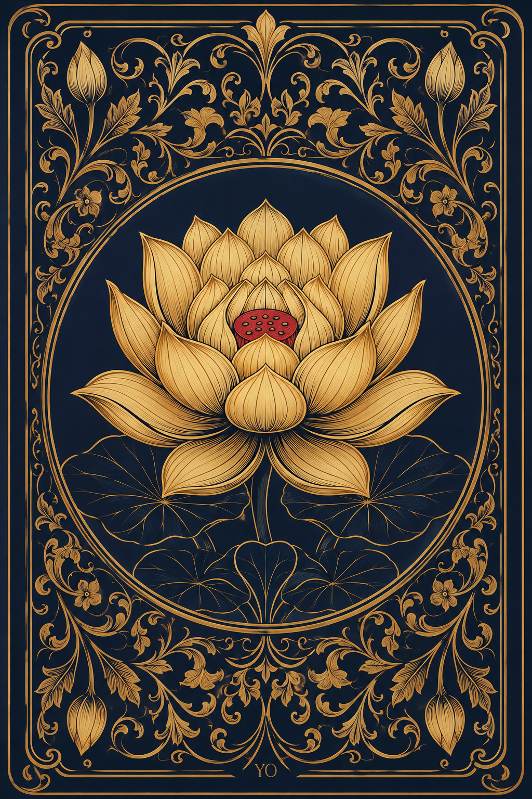

✦ Harmonie ✦
Oracle du Lotus
Laisse l'univers choisir le message de ton âme
← Retour à l'accueil
✿
✦
Tirer une carte
52 cartes · tirez pour commencer

✿
✦ Cliquer pour révéler ✦
✿
Les 52 cartes de l'Oracle
Cliquer pour lire le message
✕
✿